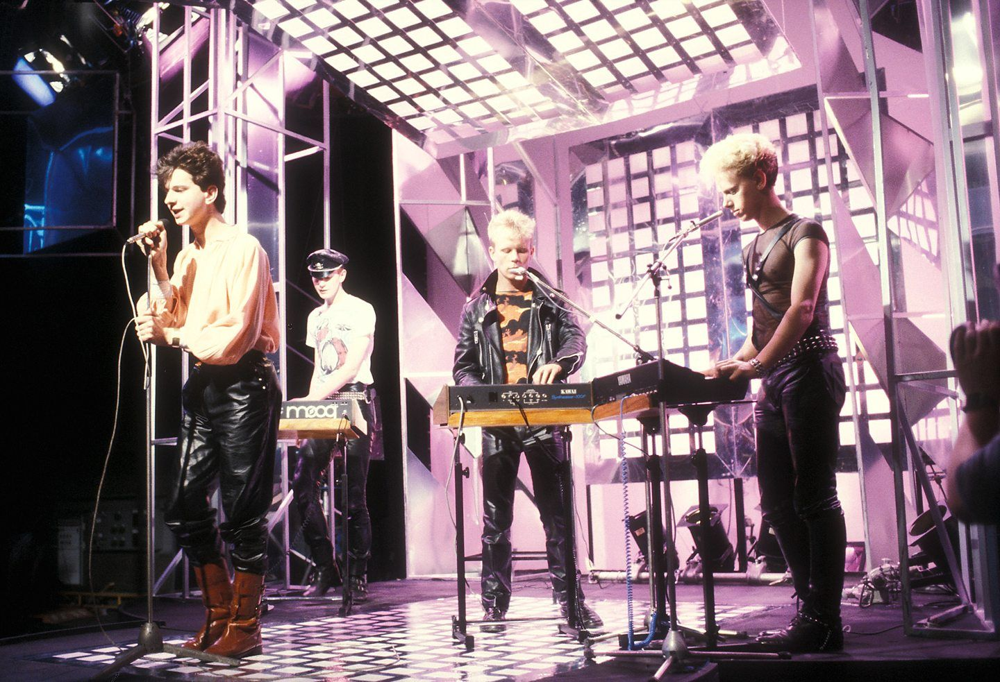

Richie Hawtin at Sonar Festival 2012 in Barcelona. Photo by Gian Pietro Dragoni on Unsplash
Techno is a type of dance music performed with electronic instruments, evolved out of German electro-pop and American house music in the 1970s and 1980s. Techno music is typically characterized by: Early synthesizers and drum machines, repetitive & danceable beats (The majority of techno music is in 4/4 time and played at a tempo ranging from 120 bpm to 150 bpm), and a looping bassline and drumbeat, over which a producer may add synth pads, diatonic melodies, or samples.
By the late 1980s, Michigan residents Juan Atkins, Derrick May, and Kevin Saunderson formed a collective known as the Belleville Three. Music historians sometimes credit Atkins with the first true techno song, 1985's "No UFO's." They helped establish a Detroit sound that caught on in Europe. Techno continued to thrive in Detroit thanks to the Underground Resistance music collective, formed in 1989 by "Mad" Mike Banks, Jeff Mills, and Robert Hood. Other techno capitals around the world included New York, Chicago, Berlin, Manchester, etc.
Today's ravers dance to a wide array of electronic music. Techno spawned many subgenres including minimal techno, ambient techno, hardcore techno, industrial techno, intelligent dance music (IDM), Detroit techno, trance, deep techno, and tech house. From these subgenres came offshoots like acid house, rave, electronica, and EDM.